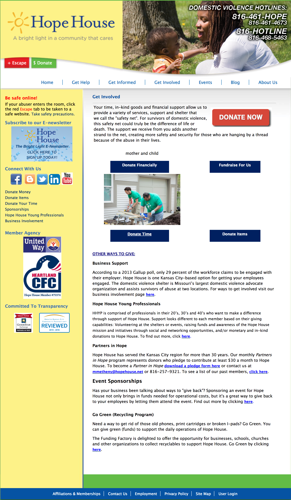
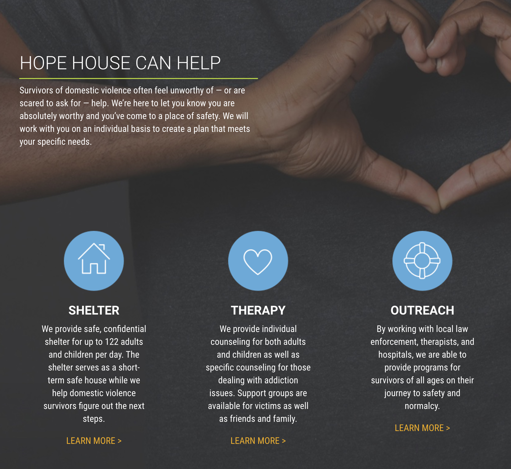
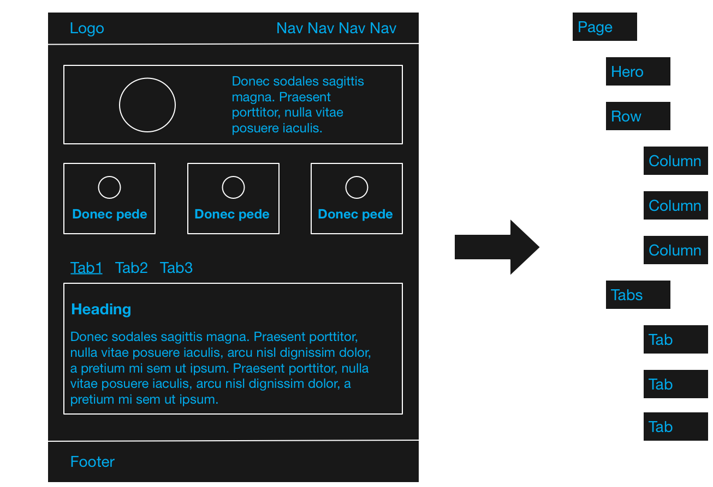

Building Component Based Drupal Sites With Bricks
Karl Kedrovsky
VML
karl.kedrovsky@vml.com
karl@kedrovsky.com
@karlkedrovsky
Motivation


Component Based Design
Example

Components
-
Section
- Text
-
Row
- Image and Text
Example
Characteristics
- Nested
- Some Are For Content (Text, Image and Text)
- Some Are For Layout (Row)
- Some Are For Both (Section)
Atomic Design

Goals
Content Managers
- Easy to author
- Choose, not create, layout
- Hard to break the design
Developers
- Leverage Drupal
- Right Tool For The Job
- Flexible
The Solution
Bricks
- Easily order and nest entity references
- Lightweight - leverages existing Drupal tools
- Flexible - use any entity type you want
- Seperates content entities and layout entities
Content Managers
- Familiar interface - just like menus and taxonomy
- Easy mental mapping
- Does not have to be concerned about page design
- Inline Entity Form makes content authoring intuitive
Developers
- No custom code/modules
- Use and re-use any entity type
- Layout API seperates content from layout
A Simple Example

Demo
Modules
- Bricks
- Entity Construction Kit (dev version)
- Inline Entity Form
- Layout API (Experimental Core Module)
Awesome Demo
Or

Guidelines and Best Practices
Design -> Drupal
Components -> Bricks
Variations -> View Modes
Layout -> Layout API
Entities
- Bricks can use any entity type
- Start with ECK (it's easy)
- For Views use an entity with a Views Reference Field field
Extras
Atomic Design
| Atomic Design | Drupal |
|---|---|
| Atoms | Fields |
| Molecule | Entity |
| Organism | Bricks |
| Templates | Content Type |
| Pages | Pages |
Living Style Guides
Emulsify
Resources
- Bricks
- Entity Reference as a Component-based Site Builder
- Emulsify
- Views Reference Field
- Layout API